Game developer · Michigan State University
Connor Walsh
Junior in Games and Interactive Media. I build games in Unity, playtest every build by hand, write up what breaks, and cut gameplay footage in Premiere Pro.
Open to
- QA & multiplayer testing
- Video & gameplay media
- Gameplay & level feedback
- Unity development
Projects
Open a game to see what I worked on. Screenshots come from the real builds. The diagrams use one simple key:
Armadillo Bowling
In developmentUnity 6 · 2D URP · Wwise
A physics bowling game set in the desert. Fling armadillos down the lanes to knock back a horde of cactus mutants. It plays like tower defense with no towers: every cluster of enemies is one you set up with your own shots.
Clustre Studio, team of 3 · My role: programming, audio engineering, design
Armadillo Bowling
In developmentUnity 6 · 2D URP · WwiseA physics bowling game set in the desert. Fling armadillos down the lanes to knock back a horde of cactus mutants. It plays like tower defense with no towers: every cluster of enemies is one you set up with your own shots.
Clustre Studio, team of 3 · My role: programming, audio engineering, design
- Type
- Original game, team project
- Team
- Clustre Studio: me, a pixel artist, and a composer
- Stage
- 26 levels built; public Steam demo planned
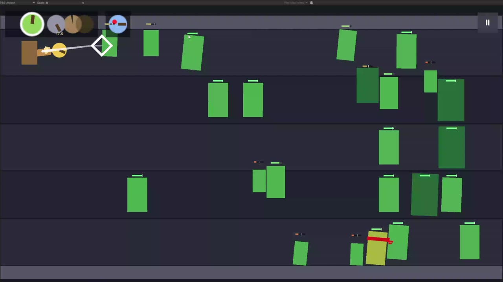
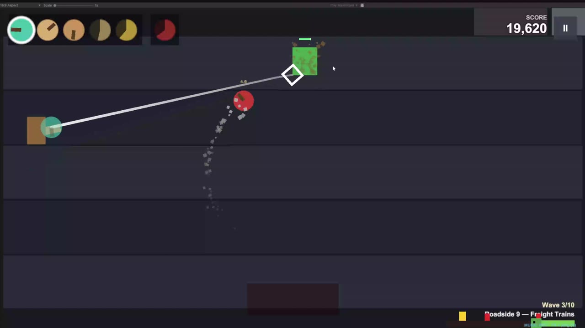
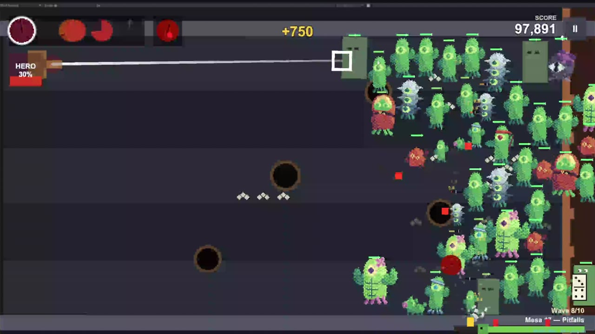
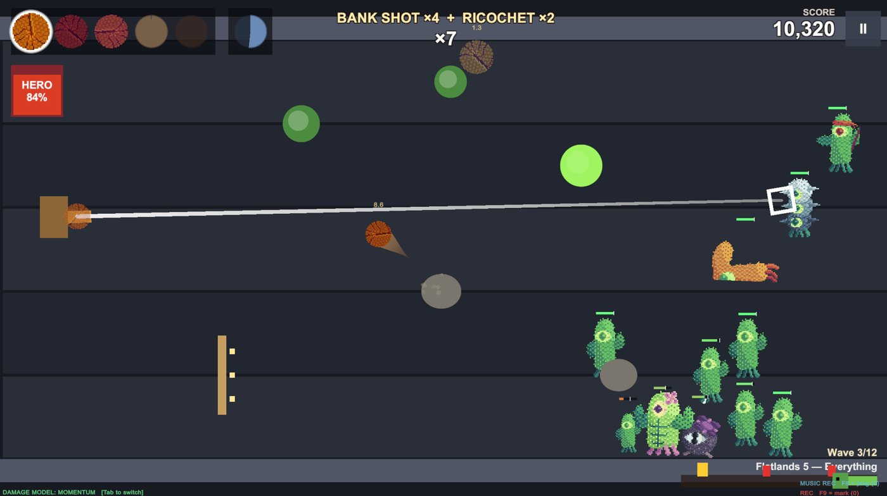
Momentum damage
Damage comes from speed times mass, so a fast shot hits harder than a slow one. Armadillos deflect at an angle set by where they strike, and a knocked-back cactus carries about half its momentum into the next one. A direct hit is the biggest damage event, and cactus-on-cactus chains reward a good setup.
The old and new damage models are both still in the build. Tab switches between them so the team can compare them in playtests.
Trick runs, Tony Hawk style
Every shot is a run. Each kill adds points and each trick adds +1 to the multiplier. When the shot leaves play, points × multiplier go on the score.
- Bank shot off a wall, ricochet off an obstacle, portal through a pipe or corn maze, curveball with heavy spin.
- Chain reaction when a knocked cactus kills another, one and done on a tough cactus, clean sweep when the field is cleared.
- A run with no kills scores nothing, and a hero that never leaves the field can't farm the multiplier forever.
27 armadillos, 24 cacti, and the Wanted board
Each armadillo and cactus has its own behavior script: boomerangs, sticky bombs, a lasso, a stampede of cows, cacti that shield, swap lanes, heal each other, or split open like nesting dolls. Gold-marked slots are heroes, which charge up by hitting enemies.
The Wanted board previews what a level sends. Waves are random, so the game plays the level out a few times on paper with its own random numbers and averages the results. A common cactus gets a thick stack of posters, and a rare one gets a single poster.
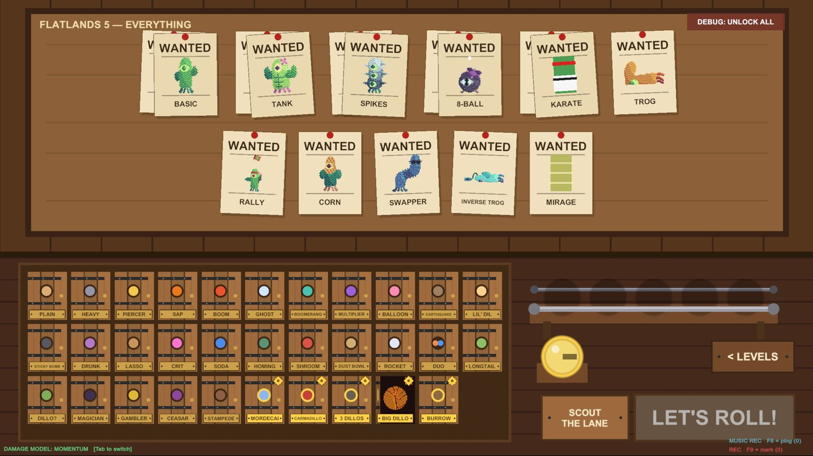
Adaptive music in Wwise
A level plays like one song, but it's really loops that switch on the bar as the game changes. A Wwise state group follows the waves, and the wave director waits so the final wave walks on exactly as the guitar drops.
- The distorted guitar only plays for the final push and bosses, so players learn that guitar means "here they come." During those sections the cacti step in time with the beat.
- Vocals are cut into 4-bar chunks sorted into pools. Every 4 bars the game picks a random chunk, so the lyrics land in a different order each run. A big trick makes the next chunk the hook, but never while you're in danger.
- Live parameters for combo and danger shape the mix. It's built on a placeholder track for now, to be replaced with original music.
- I also record original foley and tune sound effects through Wwise's authoring API.
Rewind instead of restart
The level records snapshots as you play: every cactus, armadillo, and puddle, plus the wave director, the score, and the random number generator. After a loss you can rewind to any earlier moment and play on from there, and the same cacti come down the same lanes unless you play differently.
Memory stays bounded. When the snapshot list fills, every other old snapshot is dropped and the interval doubles, so a long level gets a coarser timeline instead of an unlimited one.
26 levels across five stages
Two tutorials in the Zoo, then five levels each in Flatlands, Roadside, Oasis, and Mesa. Each stage changes the rules with its own field objects, like bouncers, half-pipes, gutters, freight trains, and teleport pipes. Each stage ends in a special level that hands out a hero.
- Tower Defense: burrowed armadillos auto-fire down the lanes.
- GTA: drive an invincible Carmadillo.
- Pipe Mania: a stage built like the old Windows pipes screensaver.
- Wall of Clesh: the boss, a huge wall creeping toward you.
Built to be tested
- Debug readouts (damage numbers, cactus health bars, the damage-model switch) each toggle on their own.
- Editor tools build levels, the title screen, and the Cactony minigame scene from code, so nothing is wired by hand.
- Automated checks fire real shots, test the rewind and the hero meters, and save screenshots for review.
- The full game flow is in: title screen, level select, loadout, objectives (survive the waves, defend the line, shot limits), and Cactony, a bonus merge-and-score minigame.
PvZ Heroes Supercharged
In developmentUnity · C# · networking · Windows + Android
A non-commercial fan recreation of Plants vs. Zombies Heroes, built to be its Pokémon Showdown: every card unlocked, the original-style deckbuilder, and online matches between Windows and Android. No ads and no monetization.
My role: project lead, systems design, playtesting and QA
PvZ Heroes Supercharged
In developmentUnity · C# · networking · Windows + AndroidA non-commercial fan recreation of Plants vs. Zombies Heroes, built to be its Pokémon Showdown: every card unlocked, the original-style deckbuilder, and online matches between Windows and Android. No ads and no monetization.
My role: project lead, systems design, playtesting and QA
- Type
- Fan project, non-commercial
- Team
- Solo project
- Stage
- All cards working; online crossplay in testing
Cards run from data, not scripts
The game's card abilities turned out to be a small rule language. Each card is built from triggers (when), queries (who), and effects (what happens). There are 124 types across the whole card pool.
The engine implements each type once, and every card that uses it starts working. All 586 usable cards now work, backed by 1,656 automated checks, with bot matches for both factions.
Windows ↔ Android crossplay
Players join a private room with an eight-character code. The room server owns the match: clients only send commands like "play this card here," and the server sends back state snapshots plus the events each screen needs to animate, like attacks, draws, and moves.
Hidden information stays hidden, so face-down gravestones never leak to the other player. Both clients show the original animated battlefield. In November 2026 I played a full match between my Windows PC and an Android tablet on real hardware.
From the bug log
Real bugs from this project, written up the way I'd file them. The last two passed over a hundred automated online checks and still broke the first time two real devices played.
Squash destroys every zombie on the board
- Expected
- Squash destroys the one zombie the player picks.
- Actual
- A shortcut handed abilities with no chosen target the caster instead, so Squash's filter matched every zombie.
- Fix
- Abilities that need a pick resolve to nothing until the player picks. A dedicated check guards the 44 other cards the shortcut would have broken.
Frozen fighters never show as frozen online, and stay frozen
- Expected
- A frozen fighter shows the ice cube, skips its next attack, then thaws.
- Actual
- Neither client received frozen status. A frozen fighter's bonus attack was skipped without using up the freeze.
- Fix
- Frozen status now reaches both players with the original ice art, and a skipped bonus attack thaws the fighter.
End Turn stays disabled after a choice during Zombie Tricks
- Expected
- End Turn becomes available as soon as a pending choice clears.
- Actual
- The HUD only refreshed when the phase changed, so the button stayed greyed out and the match stalled.
- Fix
- A dedicated "actions available" event refreshes the button without replaying the phase animation.
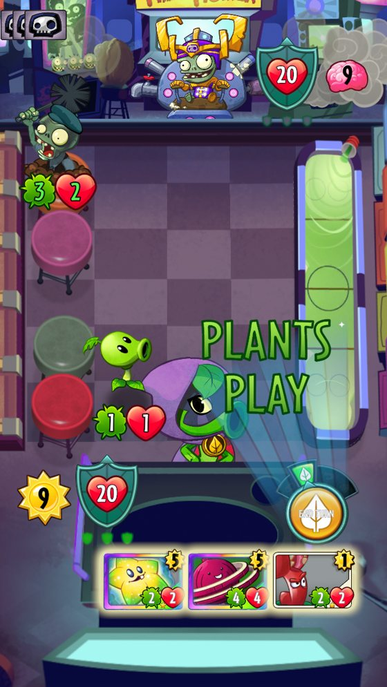
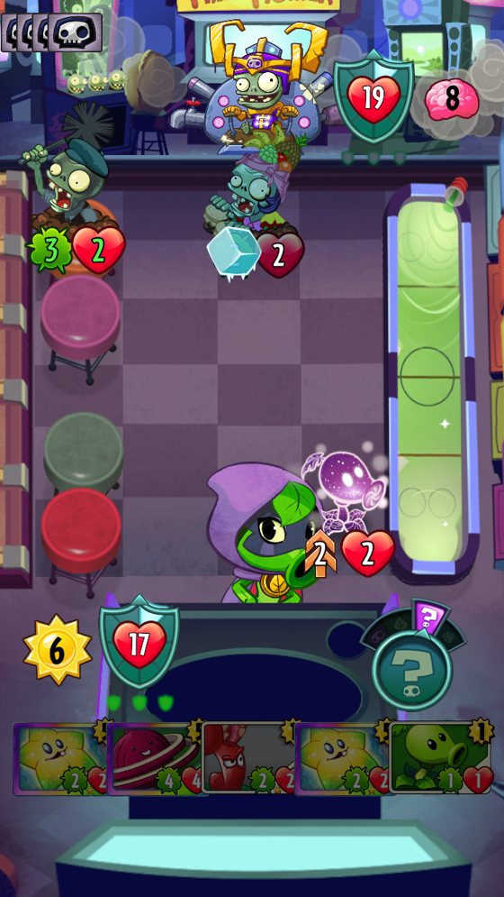
Deckbuilder rebuilt to match the original
I rejected the first custom dark interface and had it rebuilt to match the original game: seed-packet cards, hero and class art, a four-column collection, and original card inspection. It enforces the real rules (class restrictions, 40-card decks, four copies max) with every card unlocked.
Matches run on the original boards with the original animations, including heroes, fighters, and the Fight banner.
Yandere Soulslike
In developmentUnity 6 · C# · VRoid + Blender · Wwise
A soulslike set in a high school seen through a yandere's rose-tinted eyes. Teachers and students have mutated into extreme versions of their obsessions. It aims to be the most readable soulslike, the one you hand to someone who has never finished one.
Near-solo · My role: design and programming
Yandere Soulslike
In developmentUnity 6 · C# · VRoid + Blender · WwiseA soulslike set in a high school seen through a yandere's rose-tinted eyes. Teachers and students have mutated into extreme versions of their obsessions. It aims to be the most readable soulslike, the one you hand to someone who has never finished one.
Near-solo · My role: design and programming
- Type
- Original game, near-solo
- Team
- Me, with a friend on concept art
- Stage
- Core loop playable; combat demo by end of 2027
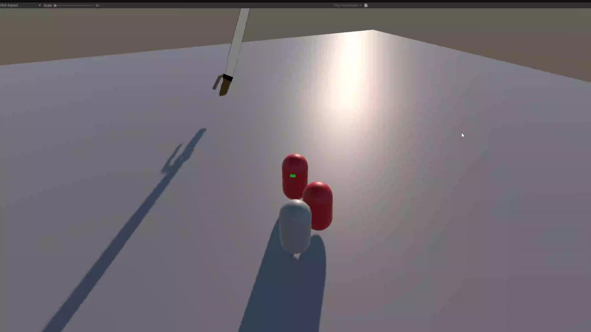
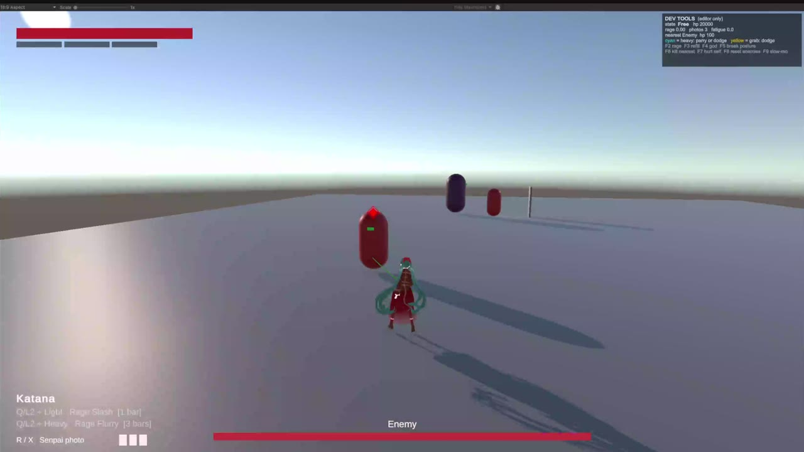
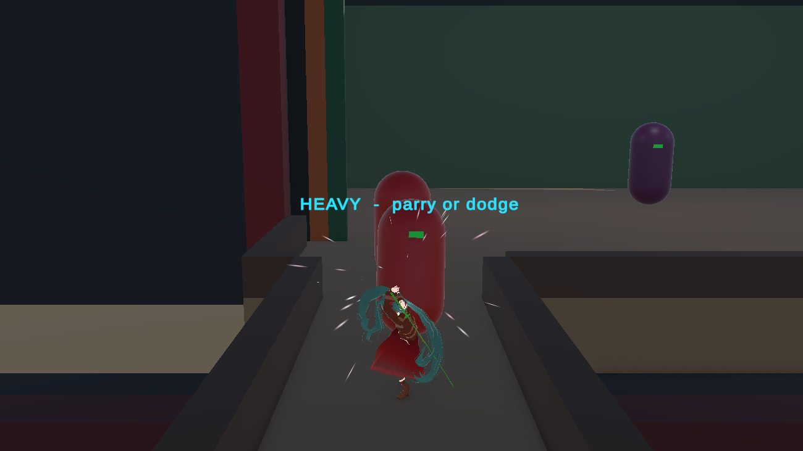
Easy to read, hard to execute
The player can always tell what attack is coming. Difficulty comes from timing, never from hidden information.
- Parry beats everything except grabs. Each attack has its own parry window, based on how recently block was pressed.
- Color cues: cyan means heavy, yellow means grab, and light attacks get no cue. A grab can only be dodged.
- Posture combat in the style of Lies of P. An unblocked hit can take half your health, blocking cuts damage by 85%, a guard meter keeps blocking from being a free win, and staggered enemies open up to a front-only fatal attack.
One damage flow, and the posture bug
Every hit takes the same path: the hitbox's damage finds a health component, checks the team, then hands off to the player's block, parry, and i-frame logic or to the enemy's posture handling.
The bug: the whole posture system was silently dead. Posture buildup and the "break out of stagger early" counter were wired to the same call, so enemies never broke. I split them into two separate paths, which led to the full refactor.
An automated playtest on F10
Press F10 in play mode and a scripted gamepad drives the real input path for about 70 seconds. It tests combos, heavy and fatal attacks, rolls, lock-on steps, the backflip, healing, both supers, parries, grabs, knockdowns, resting, death, and respawn, then writes a report with screenshots. The latest run passes 85 checks with 0 failures.
It caught a real bug: knocked-down and dead characters floated at standing height. The fix brought the hips from 0.79 m down to 0.18 m off the floor, and the test now measures it.
The Kabuki theatre boss arena
The vertical slice boss fights on a Kabuki stage. At half health the curtain closes and geisha minions perform a dance number while the boss's parryable attack cue plays underneath.
- Greyboxed as a 36 × 30 m stage with a 7.7 m apron for the dance, an audience pit 1.5 m below, and a hanamichi runway to the theatre door.
- The door is the checkpoint, a bathroom where she rests.
- An editor tool builds it, so it can be rebuilt without moving anything placed by hand.
What's playable now
- Main character in engine: built in VRoid and finished in Blender from a turnaround sheet, rigged for Unity's humanoid animation, with attack hitboxes timed by animation events.
- Healing with a Senpai photo: you're rooted while using it, and the heal lands at the end. Get hit first and you lose the photo but gain a big chunk of rage.
- Rage and supers: rage fills from damage, parries, and fatal attacks and survives death. You equip two supers that cost 1 to 3 bars.
- Death and bathroom checkpoints: nothing is lost on death.
- Plan: a 66-week roadmap scheduled around MSU's calendar, with a vertical slice of the Kabuki boss by April 2027 and a combat demo by the end of 2027.
Shroom To Breathe
In developmentUnity 6 · UI Toolkit · mobile
An idle collect-a-thon for focus. Set a timer, leave your phone alone, and grow Shrümlings. Merge them into new colors and tiers, and spend the Spores they make on cosmetics.
Team project, joined mid-development · My role: Unity programming and UI
Shroom To Breathe
In developmentUnity 6 · UI Toolkit · mobileAn idle collect-a-thon for focus. Set a timer, leave your phone alone, and grow Shrümlings. Merge them into new colors and tiers, and spend the Spores they make on cosmetics.
Team project, joined mid-development · My role: Unity programming and UI
- Type
- Original mobile game, team project
- Team
- Joined mid-development; team artist
- Stage
- Core boards and focus timer working
Taking over someone else's code
I inherited the project after the original programmer left. Most of its history was one big commit, and it was written before the design doc existed. I learned it from the code itself, documented it, and reshaped it to match the design doc.
- Boards you swipe between: storage, the field, merge stumps, and a collection that remembers every Shrümling you've ever seen. Swipe down for more fields.
- Shrümlings drag between boards and wiggle while they're held, and progress saves between sessions.
- An editor tool builds and wires every board, so the scene never has to be set up by hand.
A focus timer that's fair about real life
On Android and iPhone, the game checks why it left the screen. A locked phone or a phone call doesn't count against you. Switching to another app gets a short grace period, and closing the app fails the grow.
Apps can't see what other apps are doing, so every check fails safe: if the phone won't answer, the grace period still protects the player from a quick interruption.
Grow length and rewards
The slider runs from 15 to 60 minutes. It has notches every 15 minutes but doesn't snap, so 18 minutes is a real choice. Extra minutes inside a segment pay a little more, and crossing each notch is a noticeable jump. A live preview shows exactly what you'll earn.
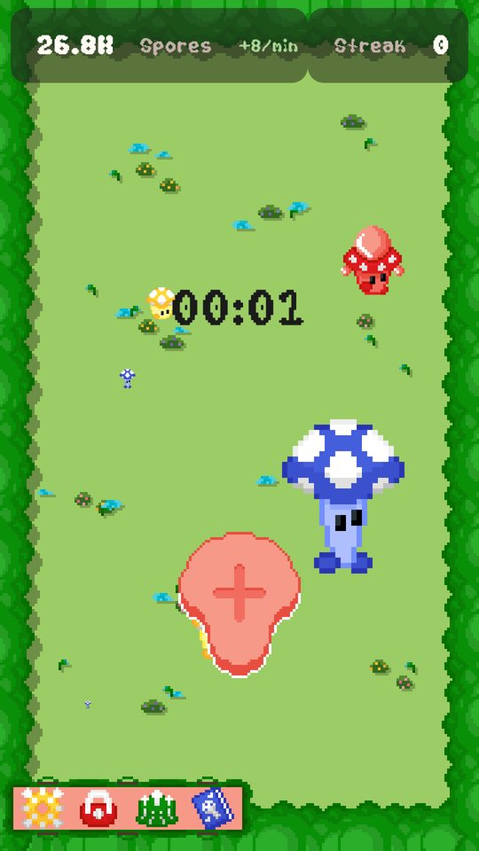
Gameplay editing
OngoingPremiere Pro
I edit long gameplay recordings for Paraly5er's Grounded 2 challenge series, where the recipes are randomized. My job is to find the episode inside hours of footage.
For Paraly5er on YouTube · My role: editor
Gameplay editing
OngoingPremiere ProI edit long gameplay recordings for Paraly5er's Grounded 2 challenge series, where the recipes are randomized. My job is to find the episode inside hours of footage.
For Paraly5er on YouTube · My role: editor
Finding the episode in the footage
I rough-cut multi-hour sessions down to the moments that carry an episode: recipe discoveries, story beats, deaths, and gear-recovery runs.
Knowing what matters in a run is the same skill as knowing which bug a developer needs to see first.
Gamma Iota Mu · MSU
Student Treasurer
Gamma Iota Mu is Michigan State's professional game development fraternity. As treasurer I registered the chapter as a nonprofit corporation in Michigan and handled outreach to industry speakers.
Heico · summer 2026
ITSM Corporate Intern
Ran application compliance audits, supported software migrations, and managed ServiceNow records under an industry mentor. Structured tickets and clean records are most of what good QA reporting is.
Toolkit
What I work in
- Engine
- Unity 6, C#, UI Toolkit, Input System, Git
- Audio
- Wwise, FL Studio, recorded foley
- Art & media
- Premiere Pro, Figma, Blender, VRoid
- Process
- Bug reports, design docs, ServiceNow
Player
What I play
Brawl Stars and Deadlock for competitive play and following the meta, Lies of P for the soulslike combat my own game learns from, and Grounded 2, which I also edit.